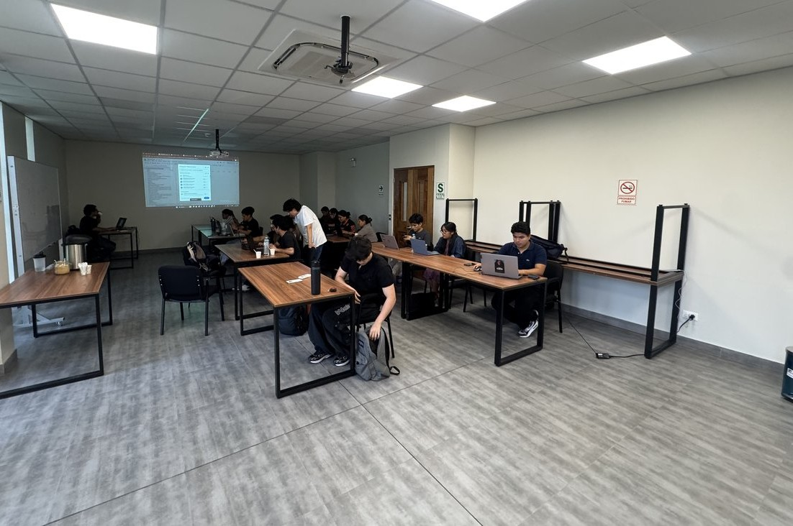
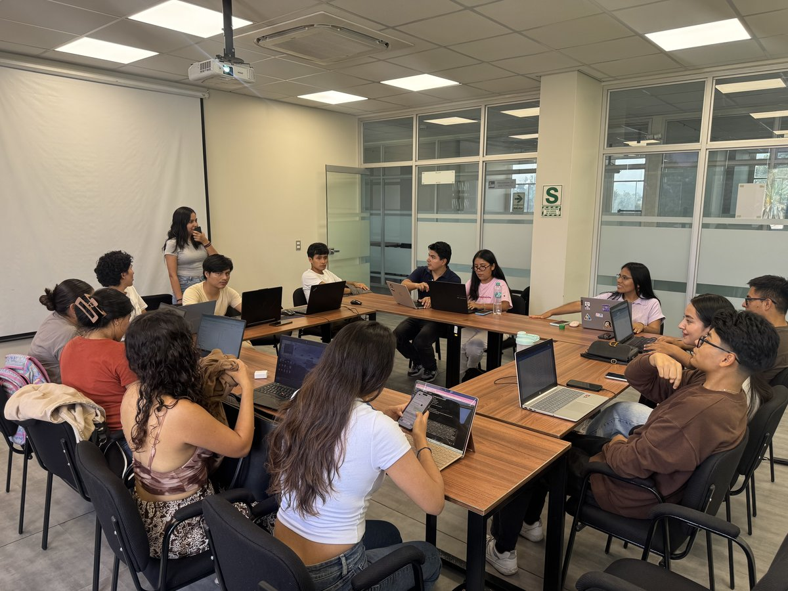

PROYECTO 5
Applied Finance Day
26
DE AGOSTO, 2026
Exposición final ante audiencia invitada
El Applied Finance Day es el evento de cierre y validación externa. Los miembros exponen sus análisis sectoriales ante una audiencia invitada, consolidando sus habilidades de oratoria, fomentando el networking estratégico y demostrando su capacidad técnica y analítica.
Exposición sectorial
Oratoria
Networking estratégico
Evaluación técnica
Cierre del ciclo de investigación · Edición 2026

